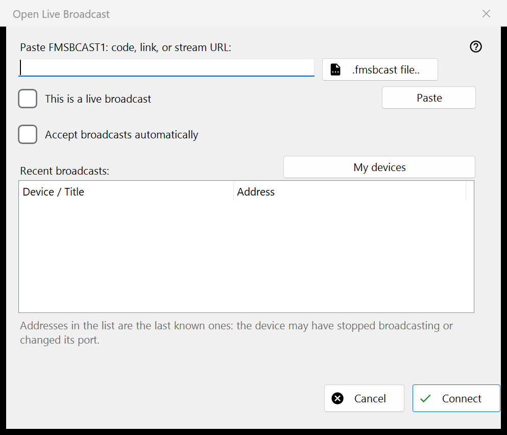

Live broadcast
What this is for
Paste a FMSBCAST1: code, link or stream URL, or choose a .fmsbcast file. Mark an ordinary URL as live only when it is a live source; otherwise it opens as on-demand media. Press Connect and enter the listener password if requested. A recent address can stop working when its producer stops or changes port. Automatic Cast acceptance is a separate explicit choice.


In this order
Paste a FMSBCAST1: code, link or stream URL, or choose a .fmsbcast file. Mark an ordinary URL as live only when it is a live source; otherwise it opens as on-demand media. Press Connect and enter the listener password if requested. A recent address can stop working when its producer stops or changes port. Automatic Cast acceptance is a separate explicit choice.
The elements
FMSBCAST1: / .fmsbcast
Paste a FMSBCAST1: code, link or stream URL, or choose a .fmsbcast file. Mark an ordinary URL as live only when it is a live source; otherwise it opens as on-demand media. Press Connect and enter the listener password if requested. A recent address can stop working when its producer stops or changes port. Automatic Cast acceptance is a separate explicit choice.
Manager settings · SFTP sharing settings · Exchange server settings